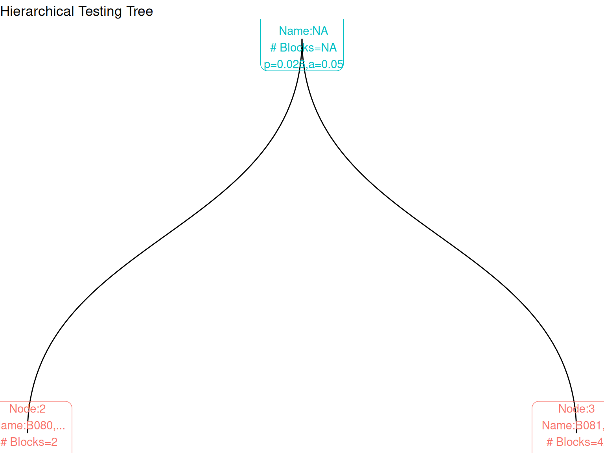

library(manytestsr)
library(data.table)
library(dplyr)
# Load built-in example data
data(example_dat, package = "manytestsr")
# Prepare individual-level data
idat <- as.data.table(example_dat)
# Create block-level summary
bdat <- idat %>%
group_by(blockF) %>%
summarize(
nb = n(), # Block size
pb = mean(trt), # Proportion treated
hwt = (nb / nrow(idat)) * (pb * (1 - pb)), # Harmonic mean weight
.groups = "drop"
) %>%
as.data.table()
print(paste("Data:", nrow(idat), "individuals in", nrow(bdat), "blocks"))
#> [1] "Data: 1268 individuals in 44 blocks"Getting Started with manytestsr
What is Hierarchical Testing?
The manytestsr package implements hierarchical testing procedures for detecting treatment effects across multiple experimental blocks. Instead of testing each block independently (which inflates Type I error) or testing everything together (which reduces power), hierarchical testing:
- Splits blocks into groups based on similarity or pre-specified structure
-
Tests groups at each level of the hierarchy
- Controls error rates while maintaining power to detect heterogeneous effects
This is especially useful for: - Multi-site experiments with varying treatment effects - A/B tests across different user segments
- Clinical trials with multiple centers - Any setting with clustered/blocked experimental units
Quick Start
Load Package and Data
Run Hierarchical Testing
# Basic hierarchical testing
results <- find_blocks(
idat = idat, # Individual-level data
bdat = bdat, # Block-level data
blockid = "blockF", # Block identifier column
splitfn = splitCluster, # How to split blocks (k-means clustering)
pfn = pOneway, # Statistical test to use (t-test)
fmla = Y1 ~ trtF | blockF, # Formula: outcome ~ treatment | block
splitby = "hwt", # Variable to guide splitting
parallel = "no", # Disable parallel processing for demo
thealpha = 0.05 # Overall error rate
)
print(paste("Testing created", nrow(results$node_dat), "nodes in the tree"))
#> [1] "Testing created 1 nodes in the tree"Find Significant Effects
# Identify blocks with detected treatment effects
detections <- report_detections(results$bdat, fwer = TRUE, alpha = 0.05)
# Summary (hit is never NA, so plain sums work)
cat("Results Summary:\n")
#> Results Summary:
cat("- Total blocks tested:", nrow(detections), "\n")
#> - Total blocks tested: 44
cat("- Blocks with detected effects:", sum(detections$hit), "\n")
#> - Blocks with detected effects: 0
cat("- Detection rate:", round(mean(detections$hit) * 100, 1), "%\n")
#> - Detection rate: 0 %
# Detections come in two kinds (see prose below)
cat("\nDetections by type:\n")
#>
#> Detections by type:
print(table(detections$hit_type))
#>
#> none
#> 44
# Show detected blocks if any found
if (any(detections$hit)) {
sig_blocks <- detections[hit == TRUE, .(blockF, hit_type, pfinalb, group_p)]
cat("\nDetected blocks:\n")
print(sig_blocks)
}The hit_type column separates two kinds of findings. A "single" hit means the block’s own test rejected: the procedure localized an effect to that specific block. A "group" hit means the procedure rejected the block’s parent group but no test within that group rejected: we know the group contains an effect somewhere, yet cannot say which block carries it. For group hits, group_p reports the rejecting parent’s p-value while pfinalb shows the (non-significant) result of the block’s own test, so the two columns together record both what was found and what was not. Blocks with hit_type == "none" include those under a rejected parent whose rejection a sibling’s own detection already explains.
Key Components
Splitting Functions
Choose how to divide blocks at each step:
# Cluster-based splitting (most common)
splitCluster # Groups similar blocks using k-means
# Pre-specified hierarchical splitting
splitSpecifiedFactor # Follows predefined hierarchy (e.g., state > district > school)
# Leave-one-out splitting
splitLOO # Focuses on largest/most powerful blocks first
# Equal-sum splitting
splitEqualApprox # Balances total size/weight across groupsTest Functions
Choose the statistical test:
pOneway # T-tests (assumes normality)
pIndepDist # Distance-based tests (robust, recommended)
pWilcox # Wilcoxon rank-sum tests (ordinal outcomes)Error Control
The recommended setting is a fixed alpha. The gated top-down testing limits which hypotheses are ever tested: a group is split and its children tested only after the group’s own test rejects. Whether that gating alone controls the familywise error rate (FWER) depends on the design; compute_error_load() (fed a headcount column such as nb, not weights) diagnoses whether your design needs depth-adjusted alpha levels beyond the gating.
# Fixed alpha -- the default and recommended setting
alphafn = NULL, thealpha = 0.05The package also wraps sequential alpha procedures from the onlineFDR package (alpha_investing, alpha_saffron, alpha_addis). These treat the tree’s p-values as a flat stream; their guarantees are proven for that stream setting, not for gated tree-structured testing, so we do not recommend them and plan to deprecate them (see the package README).
Example: Robust Distance-Based Testing
results_robust <- find_blocks(
idat = idat,
bdat = bdat,
blockid = "blockF",
splitfn = splitCluster,
pfn = pIndepDist, # Distance-based test (robust)
fmla = Y1 ~ trtF | blockF,
splitby = "hwt",
parallel = "no"
)
robust_detections <- report_detections(results_robust$bdat)
cat("Robust approach detections:", sum(robust_detections$hit), "\n")
#> Robust approach detections: 8The experimental sequential procedures are invoked as follows. We show the call without running it: as noted above, their error control is not established for tree-structured testing.
results_seq <- find_blocks(
idat = idat,
bdat = bdat,
blockid = "blockF",
splitfn = splitCluster,
pfn = pIndepDist,
alphafn = alpha_investing, # Experimental: no proven guarantee here
fmla = Y1 ~ trtF | blockF,
splitby = "hwt",
parallel = "no",
thealpha = 0.05,
thew0 = 0.049 # Starting "wealth"
)Visualizing Results
Tree Structure
library(ggraph)
library(ggplot2)
# Create tree visualization
tree_data <- make_results_tree(results, block_id = "blockF")
tree_plot <- make_results_ggraph(tree_data$graph)
# Display the tree
tree_plot +
labs(title = "Hierarchical Testing Tree") +
theme_void()
Results Summary
# Create summary table
summary_table <- tree_data$test_summary
if(!is.null(summary_table) && is.data.frame(summary_table) && nrow(summary_table) > 0) {
cat("Test Summary:\n")
print(summary_table)
} else {
cat("Tree structure (nodes by depth):\n")
if(!is.null(tree_data$nodes) && is.data.frame(tree_data$nodes)) {
print(tree_data$nodes[, .N, by = depth])
} else {
cat("Tree data structure available but not displayed in simple format.\n")
}
}
#> Tree structure (nodes by depth):
#> depth N
#> <int> <int>
#> 1: 1 1Best Practices
1. Data Preparation
- Ensure treatment assignment is balanced within blocks
- Include relevant block-level covariates for splitting
- Calculate appropriate power weights (harmonic mean weights work well)
2. Method Selection
-
Start with:
splitCluster+pIndepDistwith a fixed alpha (the default) -
For pre-specified hierarchies: Use
splitSpecifiedFactor -
For robustness: Always consider
pIndepDist -
For multiple outcomes: Add local p-value adjustment (e.g.
local_simes)
3. Interpretation
- Focus on blocks identified as significant
- Consider effect sizes, not just p-values
- Validate findings with additional data if possible
Next Steps
The Hierarchical Testing with manytestsr vignette walks through a complete analysis: alternative splitting strategies, detection reporting under FWER control, and visualization of the testing tree.
By testing groups of blocks before individual blocks, find_blocks() spends few tests at the top of the tree and descends only into groups whose tests rejected, retaining power to find the blocks where treatment effects concentrate. Whether that gating alone controls the familywise error rate depends on the design; compute_error_load() diagnoses when depth-adjusted alpha levels are needed.